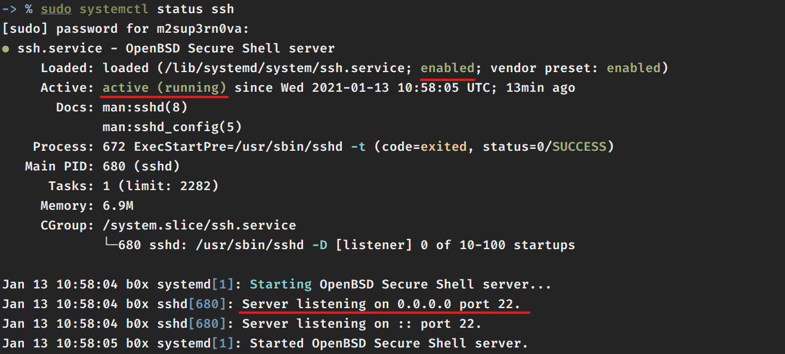
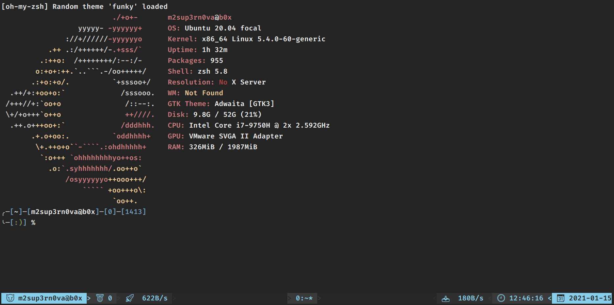

Owner : 🧛🏻♂️ - Mr. Sup3rN0va | 09-February-2021
Tags : #i0S (📲), #android (📱), #pentesting (👨🏼💻), #tools (⚒), #cheatsheet (📜)
Ubuntu Server 20.04 as there is no GUI and then we can do SSH to do pentestingUbuntu Server 20.04, you will have option to install openssh-server at the time of OS installationSSH directly after installing Ubuntu and then, we can copy-paste the commands 🤩🥳👍Windows
TerminusTerminus to achieve it's full potential but these are only required if you are using Windows
scp from terminus to transfer data
Linux
Alacritty or Konsole or GnomeKonsole on KDE and Gnome on GNOMEX11 and SCP, so on that part we are coveredTerminus aboveVM like oh-my-zsh and tmuxNow on freshly installed VM (Ubuntu, I presume), we need to customize the shell
Before that will install some necessary kits
Create a file called ".zsh_profile" and add these enteries to it
# =================================================================
# Aliases
# =================================================================
alias ll='ls -alh --color=always'
alias cls='tput clear reset'
# =================================================================
# Custom Functions
# =================================================================
apt-update()
{
sudo apt clean -y;
sudo apt autoclean -y;
sudo apt remove -y;
sudo apt autoremove -y;
sudo apt update;
sudo apt upgrade -y;
sudo apt dist-upgrade -y;
sudo apt install build-essential linux-headers-`uname -r` -y
}
Once this is being created run : source ~/.zsh_profile
Now update your installation by typing : apt-update
Now let's install some important packages
sudo apt install -y net-tools iputils-ping wget curl python3-pip python3-venv screenfetch zsh tmux git gdebi openssh-server openjdk-14-jdk openjdk-14-jre aapt zipalign unzip bat
Recently I had some issues installing openjdk packages on Ubuntu Server 20.04, not sure why but there were several mismatch hashes.
To get through, I had to install java from linuxuprising. Use this only if you are not able to install openjdk-14-jdk and openjdk-14-jre from above command
To install Java on Ubuntu Server 20.04
sudo add-apt-repository ppa:linuxuprising/java
apt-update # This will only work if you have set above .zsh_profile
sudo apt install oracle-java15-installer
java --version # Once Java is installed
This will install all the required pre-requisite packages
If you are using Ubuntu Server 20.04, then this step is not needed because SSH is by-default enabled, but just in case if you are setting this up on any other VM Guest then, just enable SSH on VM by typing : sudo systemctl start ssh and you need to enable it at boot so : sudo systemctl enable ssh
You can check SSH status as : sudo systemctl status ssh

oh-my-zsh 😍🥰
Installation is pretty simple
$ sh -c "$(curl -fsSL https://raw.github.com/ohmyzsh/ohmyzsh/master/tools/install.sh)"
OR
sh -c "$(wget -O- https://raw.githubusercontent.com/ohmyzsh/ohmyzsh/master/tools/install.sh)"
ZSH_THEME_RANDOM_CANDIDATES=( "xiong-chiamiov" "mortalscumbag" "dst" "trapd00r" "funky" "clean" "fino-time" "bureau" "dpoggi" "mikeh" "geoffgarside" "crcandy" "simonoff" "rkj-repos" "agnoster" "darkblood" "frisk" "nicoulaj" "duellj" "rkj" )
~/.zshrc and search for ZSH_THEME_RANDOM_CANDIDATES and replace that line with above line. Also, ZSH_THEME is set to robbyrussell by default, change that to random and you will have a new shell everytime you hit the .zshrc fileREFERENCE : "Oh-My-ZSH"
zsh-autosuggestions 😍🥰
Installation is simple. Once you have 'oh-my-zsh' installed, do
git clone https://github.com/zsh-users/zsh-autosuggestions ${ZSH_CUSTOM:-~/.oh-my-zsh/custom}/plugins/zsh-autosuggestions
Open ~/.zshrc file and find plugins and add as plugins=(zsh-autosuggestions)
If you have any other plugins installed like I had git, then the final will look like : plugins=(git zsh-autosuggestions)
REFERENCE : "zsh-autosuggestions"
zsh-syntax-highlightning 😍🥰
Installation is simple. Once you have 'oh-my-zsh' installed, do
git clone https://github.com/zsh-users/zsh-syntax-highlighting.git ${ZSH_CUSTOM:-~/.oh-my-zsh/custom}/plugins/zsh-syntax-highlighting
Open ~/.zshrc file and find plugins and add as plugins=(zsh-syntax-highlighting)
If you have any other plugins installed like I had git, then the final will look like : plugins=(git zsh-autosuggestions zsh-syntax-highlighting)
REFERENCE : "zsh-syntax-highlightings"
Installing Rust based programs for awesome output
Steps:
# Installing program alternate to ls
# Download EXA from : https://github.com/ogham/exa/releases
unzip exa-linux-x86_64-0.8.0.zip
mkdir ~/.local/bin
mv exa-linux-x86_64 ~/.local/bin/exa
sudo ln -s ~/.local/bin/exa /usr/bin/exa
# Installing program alternate to cat
# Docs : https://github.com/sharkdp/bat
sudo apt install bat -y
# Installing program alternate to ps
# Docs : https://github.com/dalance/procs
sudo snap install procs
TMUX is a terminal multiplexer which enhances your productivity by splitting up the terminal pane and even provide tabs from a single SSH session so that you don't have to create or do SSH if you wanted to test on one window and get the output on other
As from above pre-requisite installation tmux is already installed and you can run it directly by typing tmux on terminal but we need to customize it to look good, so let's theme it 😻😻
First create a new folder as : ~/.tmux
cd ~/.tmux and download tmux themes and plugins
"Nord Theme"
git clone https://github.com/arcticicestudio/nord-tmux.git
"TMUX-Power Theme"
git clone https://github.com/wfxr/tmux-power.git
"Tmux-Net-Speed"
It's a plugin for "TMUX-Power Theme" which shows the upload and download speed
git clone https://github.com/tmux-plugins/tmux-net-speed.git
All these should be in ~/.tmux folder
Create a new file called tmux.conf and add these
-> % cat .tmux/tmux.conf
# ============================================================================
# Prefix = <Cntrl+c>
#
# Command Mode : Prefix + :
# ------ Rename Current Window : :rename-window __name__
# OR
# ------ Rename : Prefix + ,
#
# Copy Mode : Prefix + [
# ------ Quit : q and rest all commands are like vim
# ------ Start Selection : Spacebar
# ------ Clear Selection : Esc
# ------ Copy Selection : Enter
# ------ Paste Selection : Prefix + ]
# ------ Search Forward and Backward : / and ?
# ------ Next Occurance Forward/Backward : n/N
#
# Panes :
# ------ Split Screen : Horizontal : (Prefix h) and Vertical : (Prefix v)
# ------ Move between Split Panes : Prefix Up, Down, Left, Right
# ------ Swap Split Panes : Prefix Shift+{, Shift+}
# ------ Zoom : Prefix + z
# ------ Resize Split Panes : Prefix + Cntrl(Hold) + Arrow_Keys
#
# Windows :
# ------ Create New Window : Prefix n
# ------ Move between windows : Shift+Left,Right
# ------ Swap Windows : Control+Left,Right
#
# ============================================================================
# TMUX - Configurations
# ============================================================================
# ============================================================================
# Change prefix
# ============================================================================
unbind C-b
set-option -g prefix C-c
bind-key C-c send-prefix
# ============================================================================
# Don't allow tmux to rename windows
# ============================================================================
set-option -g allow-rename on
# ============================================================================
# Use 256 colors
# ============================================================================
set-option -g default-terminal "screen-256color"
set-option -ga terminal-overrides ",xterm-256color:Tc"
# ============================================================================
# Use vi keys for copy mode
# ============================================================================
set-option -g mode-keys vi
# ============================================================================
# Enable status bar
# ============================================================================
set-option -g status on
# ============================================================================
# Window configuration
# ============================================================================
# Create New Window
bind-key n new-window
# Switch between Windows
bind -n S-Left previous-window
bind -n S-Right next-window
bind -n C-Left { swap-window -t -1; previous-window }
bind -n C-Right { swap-window -t +1; next-window }
# ============================================================================
# Panes configuration
# ============================================================================
# Splitting to Panes
bind-key v split-window -h
bind-key h split-window -v
# Activating Panes
bind-key Left select-pane -L
bind-key Right select-pane -R
bind-key Up select-pane -U
bind-key Down select-pane -D
# ============================================================================
# Mouse Mode (Optional)
# ============================================================================
setw -g mouse off
# ============================================================================
# Keybinding for reloading tmux config file
# ============================================================================
bind r source-file ~/.tmux/tmux.conf \; display " Config File Reloaded!"
# ============================================================================
# TMUX Themes
# ============================================================================
# Settings for TMUX-POWER Theme
set -g @tmux_power_theme 'sky'
set -g @tmux_power_date_icon '📆'
set -g @tmux_power_time_icon '🕘'
set -g @tmux_power_user_icon '😈'
set -g @tmux_power_session_icon '🥇'
set -g @tmux_power_upload_speed_icon '🚀'
set -g @tmux_power_download_speed_icon '📥'
set -g @tmux_power_left_arrow_icon '<'
set -g @tmux_power_right_arrow_icon '>'
set -g @tmux_power_show_upload_speed true
set -g @tmux_power_show_download_speed true
run-shell "$HOME/.tmux/tmux-power/tmux-power.tmux"
run-shell "$HOME/.tmux/tmux-net-speed/net-speed.tmux"
# Settings for Nord Theme
#run-shell "$HOME/.tmux/nord-tmux/nord.tmux"
I have added "help" at the top of the config file
I have 2 themes already added in the config file : "Tmux-Power" and "Nord Theme"
Depending on what you are using, comment the other one, like currently I am using "Tmux-Power" theme as per the config
Also, the images are emoji which you can change as per your wish. Make sure that your terminal supports emoji - "Terminus Does" 🥳🥳🥳👍
Update the file : .zsh_profile previously created as
-> % cat .zsh_profile
# =================================================================
# Startup Commands
# =================================================================
screenfetch
export DISPLAY="x.x.x.x:0.0"
export PATH="$PATH:$HOME/.local/bin"
# =================================================================
# Aliases
# =================================================================
alias ls='exa --color=always --color-scale -l'
alias ll='exa --color=always --color-scale -al'
alias cls='tput clear reset'
alias tmux='tmux -f $HOME/.tmux/tmux.conf'
alias cat='batcat'
alias pslist='procs'
# =================================================================
# Custom Functions
# =================================================================
apt-update()
{
sudo apt clean -y;
sudo apt autoclean -y;
sudo apt remove -y;
sudo apt autoremove -y;
sudo apt update;
sudo apt upgrade -y;
sudo apt dist-upgrade -y;
sudo apt install build-essential linux-headers-`uname -r` -y
}
Replace the value of x.x.x.x from your IP Address, either Ethernet or WiFi
Then final step is to source this in .zshrc as : echo 'source ~/.zsh_profile' >> .zshrc
This will setup everything. Logout and login back and see the effects 😍🥰
Type : tmux and check whether you have the theme enabled
Final Output
